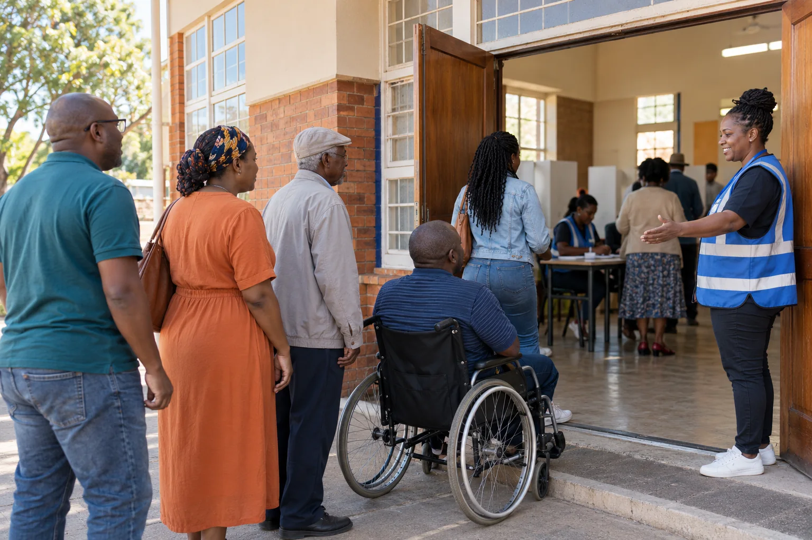

South Africa · Local Government Elections 2026
Your ward.
Your ward.
Your vote.
Your local future.
Official voter information, Electoral Commission updates and the national results count in one politically neutral place.
Until voting closes
Calculating…
Wednesday · 4 November 2026 · 21:00

Official national count
Live IEC results
Figures below are fetched from the Electoral Commission’s 2026 national results file. They update automatically as the IEC publishes captured results.
Connecting to the official IEC results service…
Awaiting the IEC update time.
Open full official results dashboard →
Latest official updatesElection news
All IEC news →
Election news
from the IEC
Special voting and Election Day readiness
The IEC says special voting runs on 2 and 3 November, ahead of Election Day on 4 November. Approved voters must use the station where they are registered.
Read official release →Results Operations Centres
The Electoral Commission has established a national results centre and nine provincial centres to support access to verified election information.
Read official release →Countering election disinformation
The IEC and digital platforms announced measures to protect election-information integrity during the 2026 Local Government Elections.
Read official release →Official voter servicesPrepare before
Prepare before
you leave home
Confirm your details
Check your registration status, ward and designated voting station directly with the IEC.
Check voter details →Find your station
Use the IEC’s published 2026 voting-station lists and check the latest information before travelling.
View station lists →Report disinformation
Use the Electoral Commission’s official channel when you encounter false or misleading election information.
Open IEC reporting channel →